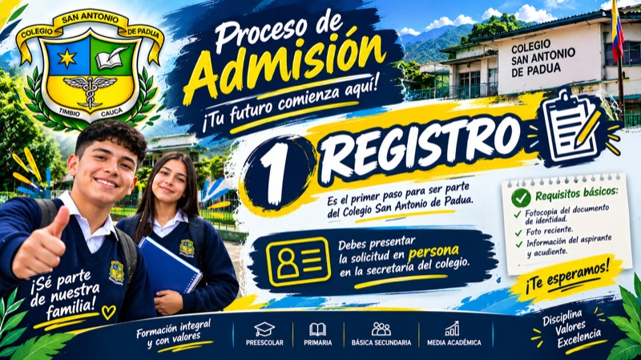
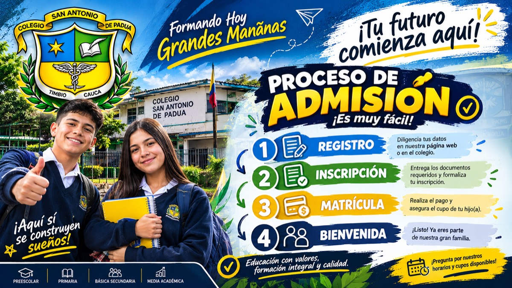
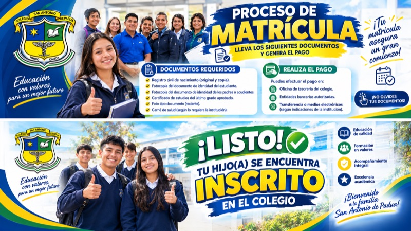

El proceso de admisión está pensado para orientar a las familias de una manera sencilla desde el primer acercamiento con la institución hasta la matrícula del estudiante. A través de las etapas de registro, inscripción y matrícula, se busca organizar la información necesaria y facilitar el ingreso de nuevos estudiantes a la comunidad educativa.
Proceso de Admisión

Requisitos
Para iniciar el proceso de admisión es importante contar con algunos documentos básicos que permitan identificar al estudiante y registrar su información académica y familiar.
- Documento de identidad del aspirante.
- Fotografía reciente del estudiante.
- Documento de identificación del padre, madre o acudiente.
- Registro civil de nacimiento.
- Certificado de estudios del último grado cursado.
- Información relacionada con el sistema de salud.
Contar con esta documentación ayuda a que el proceso de inscripción y matrícula sea más organizado y sencillo para las familias.
¿Necesitas orientación sobre admisiones?